NO MUNDO DAS FADAS
Conheça o mundo mágico de Tinker Bell.
Uma pequena fada que descobre seu talento e enfrenta uma grande aventura ao lado de suas amigas para ajudar a trazer a primavera para Pixie Hollow.
MUNDO DE MAGIA
NO MUNDO DAS FADAS
Uma pequena fada que descobre seu talento e enfrenta uma grande aventura ao lado de suas amigas para ajudar a trazer a primavera para Pixie Hollow.
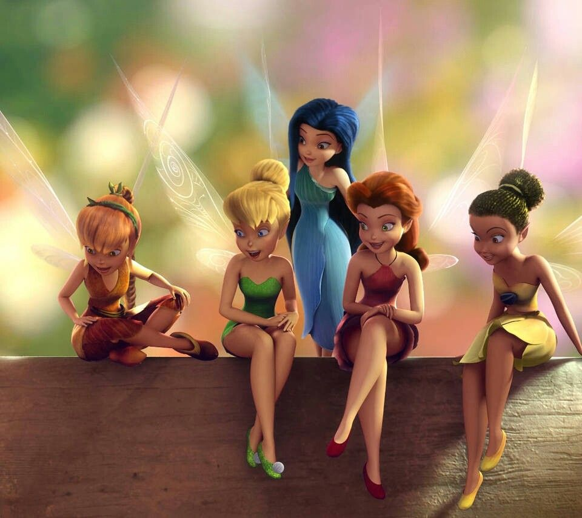
CONHEÇA AS AMIGAS
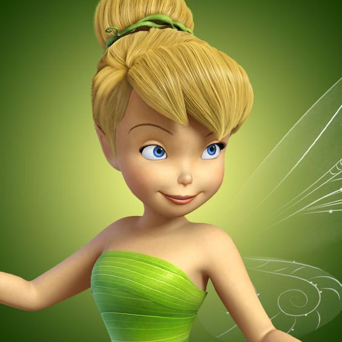
Uma fada curiosa, inteligente e corajosa que adora inventar coisas.
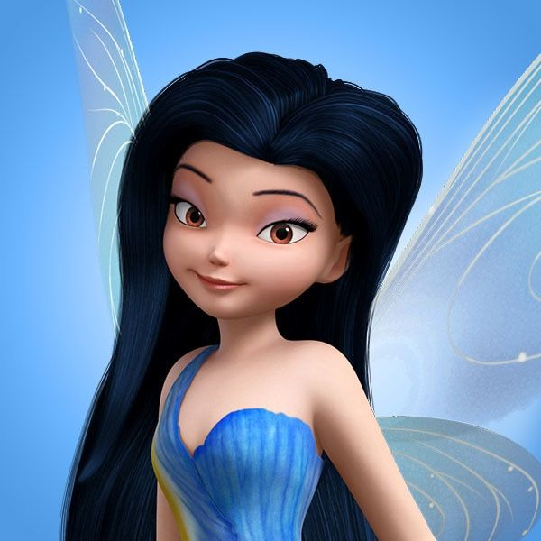
Uma fada da água tranquila, gentil e muito amigável.
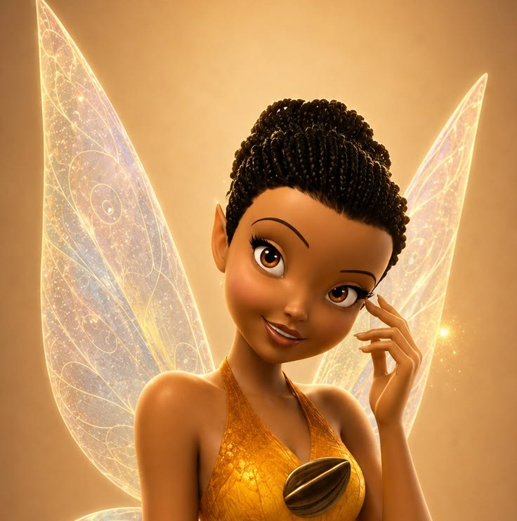
Uma fada da luz responsável, cuidadosa e um pouco preocupada.
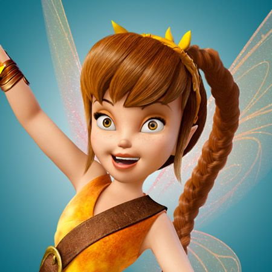
Uma fada dos animais divertida, carinhosa e aventureira.
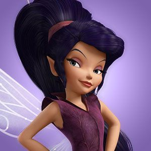
Uma fada rápida, competitiva e bastante confiante.
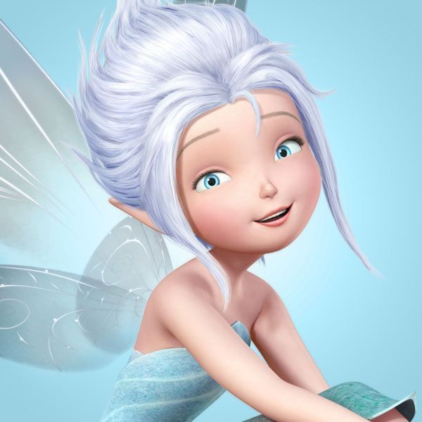
Uma fada do inverno alegre e curiosa, que é irmã de Tinker Bell.

A sábia e elegante rainha que governa o Refúgio das Fadas.
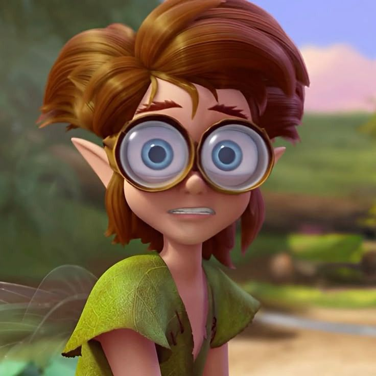
Um duende inteligente e engraçado que adora criar invenções.

Um talentoso artesão que é gentil e um grande amigo de Tinker Bell.
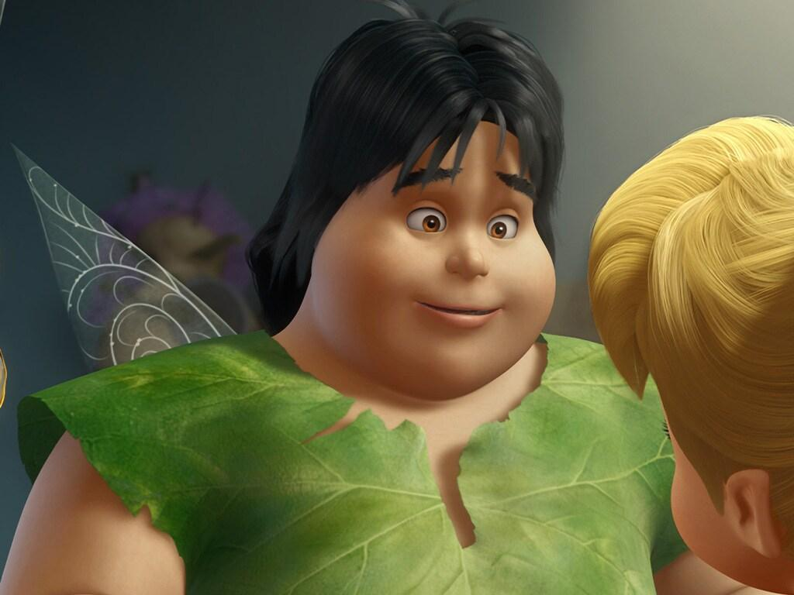
Um duende inventor divertido e atrapalhado que trabalha com tecnologia.
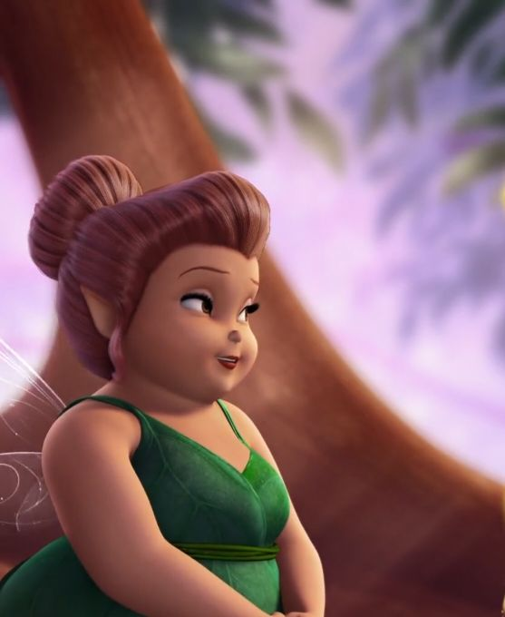
Uma fada trabalhadora e dedicada, responsável por cuidar das outras fadas e organizar suas tarefas.
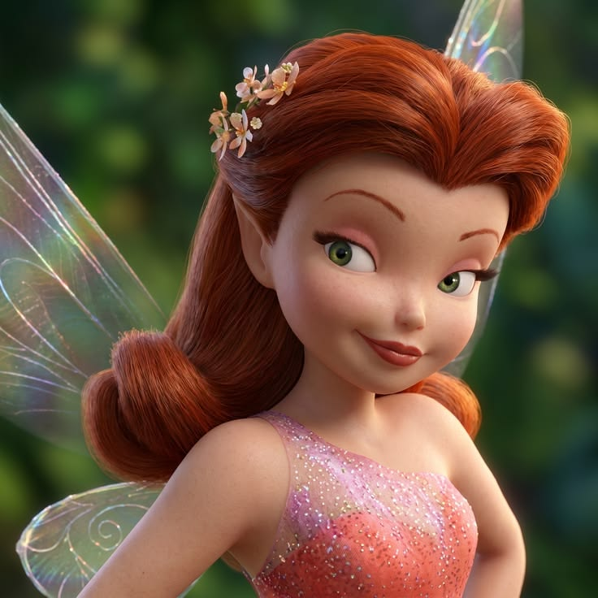
Uma fada das flores vaidosa, elegante e apaixonada pela natureza.